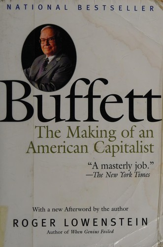

罗杰·洛温斯坦（Roger Lowenstein）是《华尔街日报》的前资深记者，以其对金融人物和事件的深度报道著称，后来还撰写了《When Genius Failed》（记述长期资本管理公司覆灭始末）等商业经典。《巴菲特传》（Buffett: The Making of an American Capitalist）于1995年由兰登书屋（Random House）出版，是最早的巴菲特全面传记之一，也被普遍认为是至今最好的一部。洛温斯坦在撰写此书时获得了大量第一手素材——他采访了巴菲特的家人、合伙人、商业伙伴和竞争对手，并翻阅了早期合伙企业的信件和文件，呈现出一幅远比巴菲特公开形象更为丰富和复杂的肖像。
全书从巴菲特在奥马哈的童年写起。洛温斯坦细致地追溯了这位未来投资家的早期线索：六岁时挨家挨户推销口香糖和可口可乐、少年时代送报纸并用收入购入弹球机放置在理发店收取分成、十一岁买入人生第一只股票。他在哥伦比亚大学师从本杰明·格雷厄姆（Benjamin Graham）的经历被详细记述——格雷厄姆教给他的"安全边际"原则和"市场先生"比喻成为他日后一切投资决策的基石。但本书最有价值的章节或许是对巴菲特合伙企业时期（1956—1969年）的深入描写：洛温斯坦展示了年轻的巴菲特如何以极少的启动资金建立合伙企业，如何在美国运通（American Express）色拉油丑闻中逆势重仓，以及他在六十年代末因找不到便宜股票而选择解散合伙企业的罕见自律。
洛温斯坦的新闻记者训练使他没有将此书写成一部"圣徒传"。他毫不回避巴菲特性格中的复杂面——对金钱近乎偏执的专注、与家人之间的情感距离、在社交场合的策略性魅力。他记述了巴菲特在收购伯克希尔纺织厂时的失算（巴菲特后来多次承认这是一个错误），也写到了巴菲特与所罗门兄弟公司（Salomon Brothers）国债交易丑闻的纠葛——1991年巴菲特临时出任所罗门董事长以挽救公司的那段经历，成为全书最具戏剧性的篇章之一。这种平衡的笔触使得巴菲特作为一个真实的人而非一个被神化的符号呈现在读者面前。
洛温斯坦此书出版近三十年后仍然被视为理解巴菲特不可绕过的作品。施罗德（Alice Schroeder）2008年出版的《滚雪球》（The Snowball）篇幅更长、细节更多、且得到了巴菲特本人的授权配合，但许多读者认为洛温斯坦的版本在叙事节奏和分析深度上更为出色——它不仅讲述了巴菲特做了什么，更致力于解释他为什么这样做。对于投资者而言，这本书的核心启示或许是：巴菲特的成功并非天赋异禀的结果，而是一种极端理性的思维方式与数十年如一日的纪律性的产物。